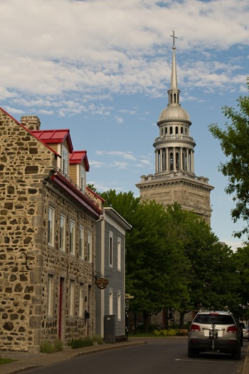
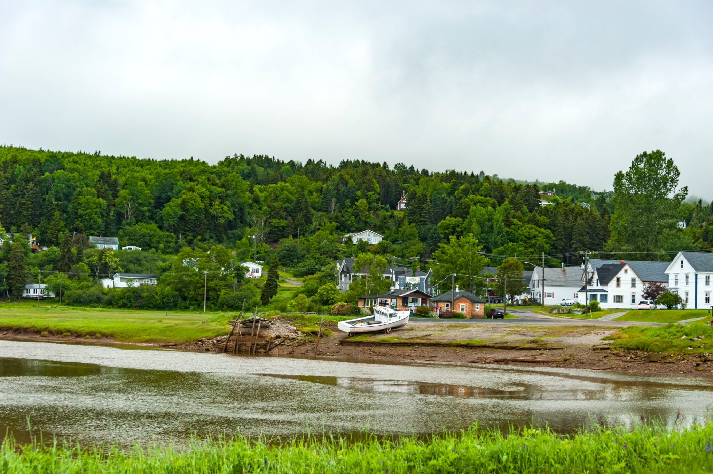
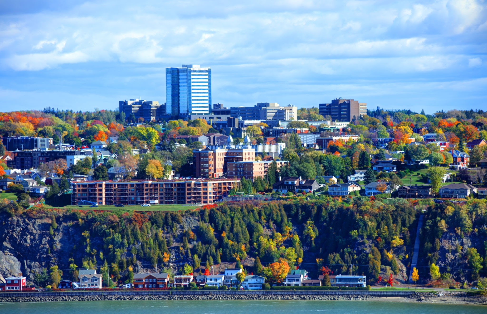
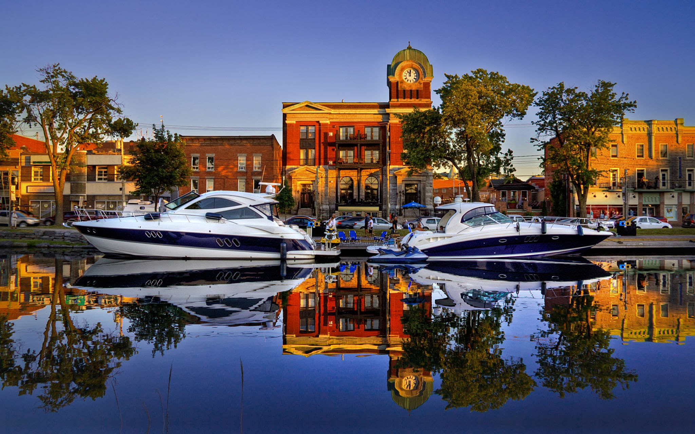
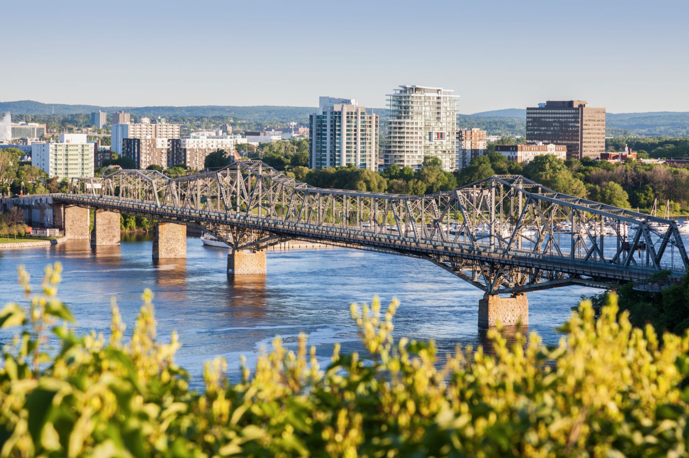

La Prairie est une ville située dans la province du Québec, au Canada, plus précisément sur la rive sud du fleuve Saint-Laurent, en face de Montréal. Elle fait partie de la Montérégie, une région connue pour sa nature, ses vergers et son calme.

Alma est une ville située dans la région du Saguenay–Lac-Saint-Jean, au Québec, au Canada. Elle se trouve près du magnifique lac Saint-Jean, un lieu très apprécié pour les activités de plein air.

Lévis est une ville située sur la rive sud du fleuve Saint-Laurent, juste en face de Québec, la capitale de la province. C’est une ville importante de la région de Chaudière-Appalaches.

Salaberry‑de‑Valleyfield est une ville située dans la région de la Montérégie, sur la Grande‑Île du Saint-Laurent, à l’extrémité ouest du lac Saint-François. Avec une population de environ 42 400 habitants selon le recensement 2021, elle connait une croissance récente d’environ 5% en cinq ans.Nommée la «Venise du Québec», elle se distingue par ses rivières, canaux et plans d’eau urbains .

Gatineau est une grande ville francophone du Québec, située en face d’Ottawa, connue pour son parc naturel, son musée de l’histoire du Canada et ses festivals comme celui des montgolfières. Elle combine nature, culture et proximité avec la capitale.